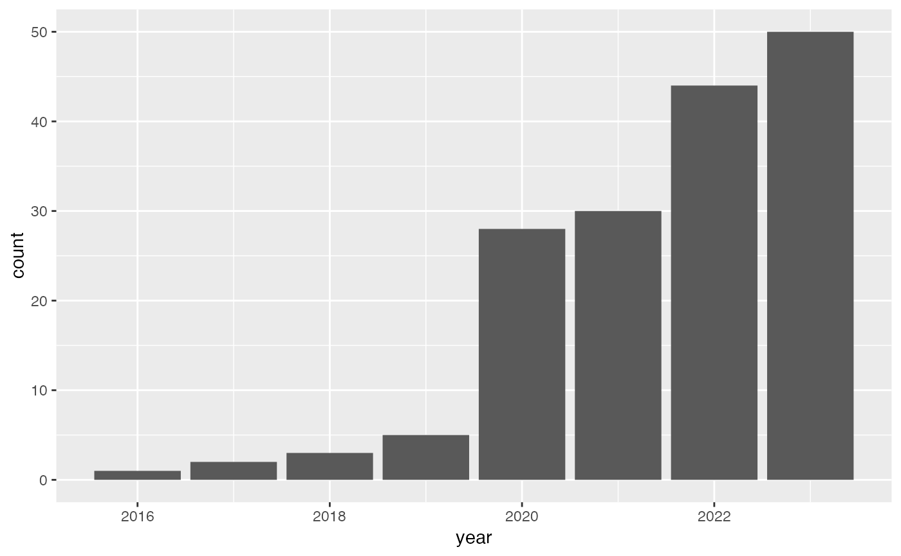

Using the kaggle API, this dataset was created on Nov 18 2023 as the result of searching for the keyword 'diamond'. The list of search results was expanded by the meta information for each of the datasets.
Details
The first eight variables are (slight) modifications of a dataset search through the the kaggle API. Those variables are:
- ref
character vector of the form
/ . - title
character vector containing a title of the dataset.
- size_value
integer vector of the size of the dataset.
- size_unit
one-to-two-character vector of the unit in which the dataset is recorded. Each element is one of "B", "KB", "MB", "GB".
- lastUpdated
date and time of the last update.
- downloadCount
vector of integers of the number of downloads.
- voteCount
vector of integers of the number of votes.
- usabilityRating
vector of numeric values on a scale of 0 to 1 (extremely useable).
The remaining 20 variables are part of the meta information uploaded with the datasets. Kaggle meta data is described at https://github.com/Kaggle/kaggle-api/wiki/Dataset-Metadata. It follows the Data Package specification suggested by Paul Walsh and Rufus Pollock. We removed any columns with duplicated data.
Examples
# example code
library(ggplot2)
library(dplyr)
#>
#> Attaching package: ‘dplyr’
#> The following objects are masked from ‘package:stats’:
#>
#> filter, lag
#> The following objects are masked from ‘package:base’:
#>
#> intersect, setdiff, setequal, union
library(lubridate)
#>
#> Attaching package: ‘lubridate’
#> The following objects are masked from ‘package:base’:
#>
#> date, intersect, setdiff, union
# number of data sets related to 'diamond' by year
kaggle_diamonds %>%
group_by(year = year(lastUpdated)) %>%
summarize(n = n()) %>%
ggplot(aes(x = year, weight = n)) + geom_bar()
